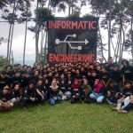

Berita Terkini
Staf Prodi InformatikaDiskominfo Kota Tangerang Ajak Mahasiswa UMT Prodi Teknik Informatika Banten Untuk Sosialisasikan Aplikasi Tangerang LIVE Terbit pada tanggal 03 Maret 2020Tangerang LIVE merupakan sebuah aplikasi terpadu dimana Teknologi Informasi yang tertanam di dalamnya adalah hasil sinergi dari aplikasi-aplikasi pelayanan yang selama ini telah dikembangkan oleh Pemkot Tangerang. Dalam aplikasi Tangerang ....Baca selengkapnya ....
Staf Prodi InformatikaProdi Teknik Informatika UMT, Gelar Workshop Peningkatan Mutu Dan Kualitas Dosen Terbit pada tanggal 27 Januari 2020Prodi Teknik Informatika Fakultas Teknik Universitas Muhammadiyah Tangerang menggelar workshop bagi dosen yang bertajuk “Pengembangan SDM dalam upaya peningkatan sebagai mentor yang profesional dibidang IT”, Minggu 26 Januari 2020. Dengan ....Baca selengkapnya ....
Admin InformatikaDiwisuda, Ribuan Mahasiswa UMT Diharap Jangan Cuma Jadi PNS Terbit pada tanggal 04 Desember 2019Sebanyak 3.577 mahasiswa Universitas Muhammadiyah Tangerang (UMT) mengikuti wisuda di Indonesia Convention Exhibition (ICE) BSD, Kecamatan Pagedangan, Kabupaten Tangerang, Selasa (3/12/2019). Wisuda ke-11 bagi mahasiswa tingkat Pascasarjana, Sarjana, Diploma dan ....Baca selengkapnya ....
 Admin Informatika45 Anggota Baru Himpunan Mahasiswa Teknik Informatika UMT Dikukuhkan Terbit pada tanggal 02 Desember 2019Sebanyak 45 peserta bootcamp Himpunan Mahasiswa Teknik Informatika (HIMTI) Universitas Muhammadiyah Tangerang dikukuhkan, Minggu (1/12/2019). Pengukuhan tersebut bertemakan “Membentuk jiwa kepemimpinan yang mandiri bertanggung jawab, berinovatif serta menjujung tinggi solideritas ....Baca selengkapnya ....
Syepry Maulana Husain, S.Kom, MTI
Ketua Program Studi
Mahpud, M.Kom
Sekretaris Program Studi